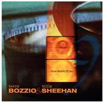

| Artist: | Terry Bozzio and Billy Sheehan |
| Title: | Nine Short Films |
| Label: | Magna Carta MAX-9062-2 |
| Length(s): | 59 minutes |
| Year(s) of release: | 2002 |
| Month of review: | [12/2002] |
| 1) | Live By The Gun | 5.49 |
| 2) | Black Wisdom | 3.53 |
| 3) | Water And Blood | 5.14 |
| 4) | Tornado Alley | 4.47 |
| 5) | Distant Horses | 6.31 |
| 6) | One More Winter | 4.35 |
| 7) | Edge Of A Circle | 5.16 |
| 8) | Finger Painting | 6.23 |
| 9) | The Last Page | 8.25 |
| 10) | Sub Continent | 7.52 |